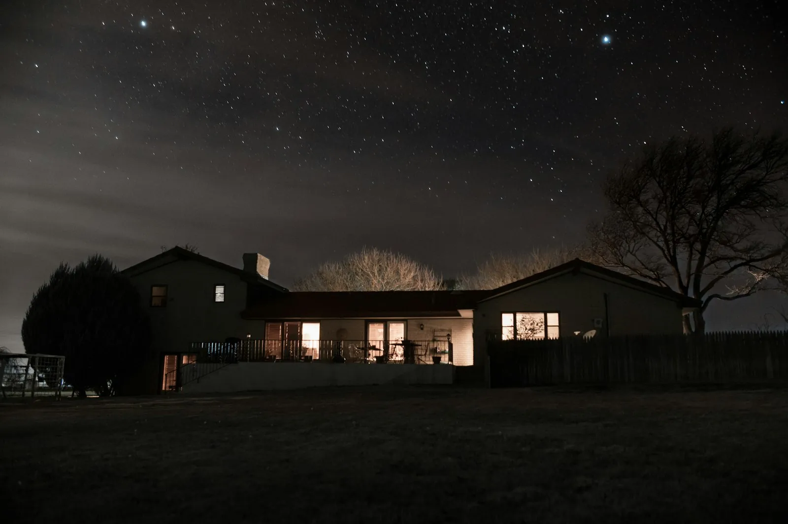

Why Century-Home Due Diligence Is Different
A standard home inspection misses the things that matter most in an old house. Generalist inspectors check what's visible and accessible; the real cost risks are concealed — behind plaster, under slabs, and inside walls. The math is brutal: the average undisclosed defect costs $18,000–$40,000, while these nine specialist checks total $800–$2,200. That's the highest-ROI spend in any old-house purchase.
1. Sewer Camera Inspection
Original clay tile or cast-iron drain lines are at or past end of life. Root intrusion, joint separation, and bellying (low spots that pool sewage) are invisible without a camera. Check cost: $300–$500. Cost to find out at the wrong time: $8,000–$22,000 for full replacement — and clay failure under slab adds $4,000–$8,000 for tunneling.
- Always camera the main line from clean-out to the street connection
- Look for root intrusion, offset joints, and belly sections
- Ask the seller for repair history — failure to disclose is actionable
2. Knob-and-Tube Wiring Identification
Knob-and-tube was standard through the late 1950s. It carries no ground, cannot safely support modern loads, and is uninsurable by most carriers if active. Look in the attic and basement for porcelain knob insulators and cloth-wrapped two-wire runs. Full rewire: $9,500–$20,000; Federal Pacific Stab-Lok and Zinsco panels: $3,500–$6,000 immediate replacement. Get a carrier quote before making an offer — see the insurance reality guide.
3. Foundation Assessment
Hairline cracks are normal settlement. Stair-step cracks following mortar joints, horizontal cracks in block, or bowing walls are structural events. Get a structural engineer — not a foundation repair company — to assess: $400–$800. Repairs range from $2,000 (crack injection) to $35,000+ (full underpinning). Roll a marble in every room above: deep sags reveal cut joists or failed beams.
4. Roof Deck & Age Verification
Pull the permit record for the last roof replacement. Two layers of shingles means the next replacement requires tear-off — add $2,000–$4,000. Access the attic: dark stains or daylight through the decking means an active leak. Roof replacement on 2,000 sq ft: $8,000–$18,000. An original 1950s roof is 65–75 years old — 15–25 years past design life.
5. Galvanized Plumbing Supply Lines
Galvanized steel supply rusts from the inside out; interior cross-section can be reduced 60–80%, causing low pressure and brown water. Full repipe to PEX: $4,800–$12,000. Test: run the bathroom faucet at full flow and observe color and pressure. Water heater 10+ years is a negotiation lever ($900–$3,500 replacement).
6. Plaster Condition Survey
Original lime plaster is worth preserving — but not all of it is stable. The tap-and-push test reveals failed keys. Bowing or crumbling sections need reattachment or replacement. Plaster repair: $2–$12 per sq ft; washers + bond + skim runs 20–30% of full drywalling ($12k–$20k). A hollow tap today is a $2 repair; a hollow tap after closing is a $20k decision.
7. Window Sash & Glazing Assessment
Operate every window. Failed sash cords, missing glazing putty, and rotted sills are common — and all fixable by a competent restorer for $200–$600 per window. Full 16-window restoration on a typical house: $3,200–$9,600 — versus $12,800–$19,200 for replacement. Single-pane with interior storm panels is acceptable; it is not a reason to replace.
8. HVAC Age & Condition
Forced-air furnaces have a 15–25 year design life. Original ductwork may be asbestos-wrapped flex or poorly-sealed sheet metal — test before disturbing (see the abatement note in the mistakes guide). A furnace at design life is a negotiation lever: replacement $3,500–$8,000 installed; central AC retrofit on a house that never had it $5,000–$12,000. Heat-pump retrofits qualify for IRA credits in 2025–26.
9. Permit History Pull
Call the building department and pull the permit history. Un-permitted additions, kitchen remodels, or electrical work become your liability at resale — and some jurisdictions require retroactive compliance before any new permit. This check costs 30 minutes and can reveal $5,000–$40,000 in inherited problems. Historic-district overlays can also restrict windows, materials, and colors — know them before you plan.
$800–$2,200 of specialist checks versus $18k–$40k of surprises. This is the easiest money in real estate.— 100+ owner survey, 2025
The 30-day inspection schedule
The nine checks do not all belong on the same day. Spread across the 30 days before closing, they cost the same and stress you less 鈥?and each one lands when its result still matters:
- Day 1鈥?, before the offer: checks 2 and 3 (K&T wiring and foundation walk) plus the insurance carrier quote. These decide whether you offer at all.
- Day 5鈥?0, in the offer: checks 1, 5, and 8 (sewer camera, galvanized supply, HVAC age) 鈥?the itemized negotiation ammunition, priced and ready for the counter.
- Day 10鈥?0, during inspection: checks 4, 6, 7 (roof, plaster, windows) piggyback on the general inspection 鈥?bring your notes and compare line by line.
- Day 25鈥?0, before you sign: check 9, the permit history pull, plus the title and survey review. This is the last thing that can stop you, so it gets the last appointment.
Total specialist spend stays in the $800鈥?2,200 band; the camera and the engineer are the two items that genuinely need pros. Everything else is flashlight work from the free checklist.
The closing-day recheck
The nine checks happen before you sign — and the recheck happens the day you take keys. It is not a repeat of the full diligence; it is a ten-minute version that protects the two gaps the schedule cannot cover:
- Condition drift. Between inspection and closing, a house can change: the seller's staging furniture hides a new stain, a rain event exposes a grading failure the dry week missed, or a fixture is swapped for a cheaper unit. Photograph every room at final walkthrough and compare against the inspection photos.
- The final utility pass. Run every valve, flush every toilet, open every window, and test every outlet once — on paper, the inspection covered them; in practice, the inspector checked a sample. The recheck is your sample.
- The document pass. Match the permit pull (check 9) against the closing paperwork: open permits on the title, the WDI report date, and the insurance binder with the de-energized letter if knob-and-tube exists. Closing is the last moment anything can be corrected by the seller.
The recheck costs an hour and it converts the nine checks from due diligence into the first step of the 90-day sequence — the audit you run at closing is literally the same walk, with the keys in your hand instead of the agent's.
Frequently asked questions
Yes — always. The 9 checks arm the inspection: they tell you what to have the pro examine twice and keep you from paying $500 to learn what you already saw. Bring your checklist notes to the inspection and compare findings line by line.
Knob-and-tube wiring, by a wide margin — it's invisible to the naked eye, absent from marketing photos, and it changes insurance, every outlet decision, and most permit work. Check 2 is the one people skip.
That's exactly what they're for. You're not asking for "something off" — you're itemizing: rewire $18k, repipe $6k, water heater $2k. Sellers respond to itemized numbers the way they respond to nothing else. Dollar flags are in the free checklist.
$800–$2,200 for the specialist set (camera, engineer, WDI, K&T inspection, abatement tests), with the permit pull free. Against an $18k–$40k average surprise, the payback is 10:1 even if nothing is wrong — because the "nothing is wrong" knowledge is itself a negotiation position.
That refusal is itself a finding 鈥?treat it as one of the nine checks failing. Most owners allow inspector access; a seller who blocks the camera or the engineer is either hiding something or will be equally difficult through renovations. The walkthrough notes what you saw, and the offer moves accordingly.